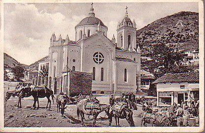
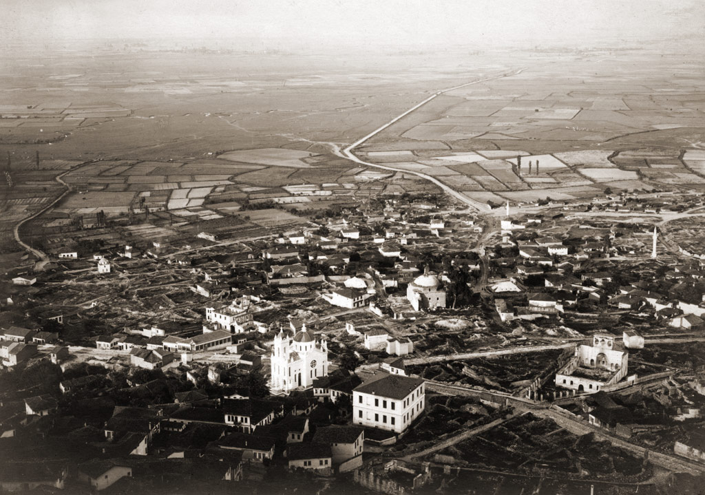

Историја на Струмица.
Струмица е населба од предсловенскиот период. Најстариот податок за постоењето на градот датира уште од 181 година п.н.е.
Тогаш населбата се споменува како Астранон (град на ѕвездите), како главно место за престојување на пеонското племе Астрон.
Како римско-византиски и црковен град, во средниот век се споменува како Тивериопол. Струмица е словенско име на градот, добиено според името на реката Струмица,
деминутив од името на Струма. На сегашното место градот е обновен во IX век од страна на царот Самуил. Во тој период прераснува во важен сообраќаен и воено-стратешки
центар. По неговата смрт во 1018 година и распаѓањето на Самуиловото царство,
Струмица е византиско воено-стратегиско и управно средиште за овој дел од Македонија, а продолжила да егзистира и Струмичката епархија.
Таквата улога ја имала до крајот на XII век. Од XI до XIV век, потпаѓа под повеќе сфери на интерес од Византија и средновековна Србија и Бугарија.
Кон крајот на XIV век потпаѓа под османлиско ропство.



Значајни историски места

Тврдина „Цареви Кули“
Издигнати на доминантна позиција на градот, дебелите бедеми и тврдини над градот, наречени Царевите Кули, сведочат за древноста, историјата низ која живеела и се издигнала Струмица. Каде и да сте во градот не може а да не ја забележите оваа величествена тврдина, која длабоко во себе крие бескрајно многу раскази, митови но и фактографија за нашиот град од древните времиња до денес. Оваа тврдина се наоѓа на јужната страна на градот, на зарамнето плато на врвот од ридот, кој мошне стрмно се издига над градот. Ова плато се наоѓа на надморска височина од 445 метри и од таму е можна прегледност и контрола над целата струмичка котлина. Платото можело полесно да се брани и кога не би било утврдено, затоа што со стрмнина е обиколено од сите страни. Ваквата местоположба на тврдината и овозможува едновремено да ги контролира трите влеза во градот.

Орта Џамија
Орта - џамија претставува сложен комплекс на објекти кои се наоѓаат во старото урбано јадро на градот. На овој локалитет се пронајдени наоди од хелинистичкиот, римскиот, доцноантичкиот и средновековниот период. Наодите од хелинистичкиот период се застапени со карактеристичните хомерски типови на мегарски чашки со претстави од Хомеровата „Илијада“ (III-II век пр.н.е.), потоа сад со претстава на Артемида, божица на ловот - особено почитувана на овие простори (III-II век пр.н.е.), држалка на сад со претстава на Силен – шумско божество; орел и други наоди од римскиот период (II век) и многубројни чинии, чаши, грниња, наушници и монети од III-II век пр.н.е. - XVII век. Овде е пронајден мермерен постамент од статуа од крајот на II и почетокот на III век, со натпис: На добар час градот му постави статуа на својот патрон великиот Тибериј Клавдиј Менон, за неговата благонаклоност и квалитети. На овој локалитет се наоѓаат и остатоци од објект кој можеби претставува ранохристијанска базилика.

Струмин гроб
Гробот е висок 230 см, широк 240 см и долг 400 см. За настанувањето на гробот постојат три легенди:
според првата, во гробницата е сместена Струма, сестрата на Крале Марко;
според втората, гробницата припаѓала на принцот Персеј, роднина на Александар Македонски;
според третата, ова е гробница на Струма, ќерка на некој заповедник на Словените на Струмичката област. Гробот што се наоѓа во непосредна близина на селото Баница и денеска сведочи за легендата за убавата Струма која го предала својот татко заради љубовта кон еден од војсководците кои сакале да го потчинат нејзиниот народ. Оваа легенда вели дека градот бил опсаден од силна византиска војска, но не успевале никогаш до тогаш да го освојат. Тогаш се случило предавство на Струма, која била вљубена во византиски војсководец и му ја открила тајната за неосвоивoто, Струмичко кале. Византијците ја освоиле тврдината, а таткото ја проколнал ќерка си: кога ќе умре, земјата девет пати да ја исфрла од гробот.[1][2]
Деветте слоеви делкан бигор, легендата ги поврзува со деветте исфрлувања и погребувања на Струма.